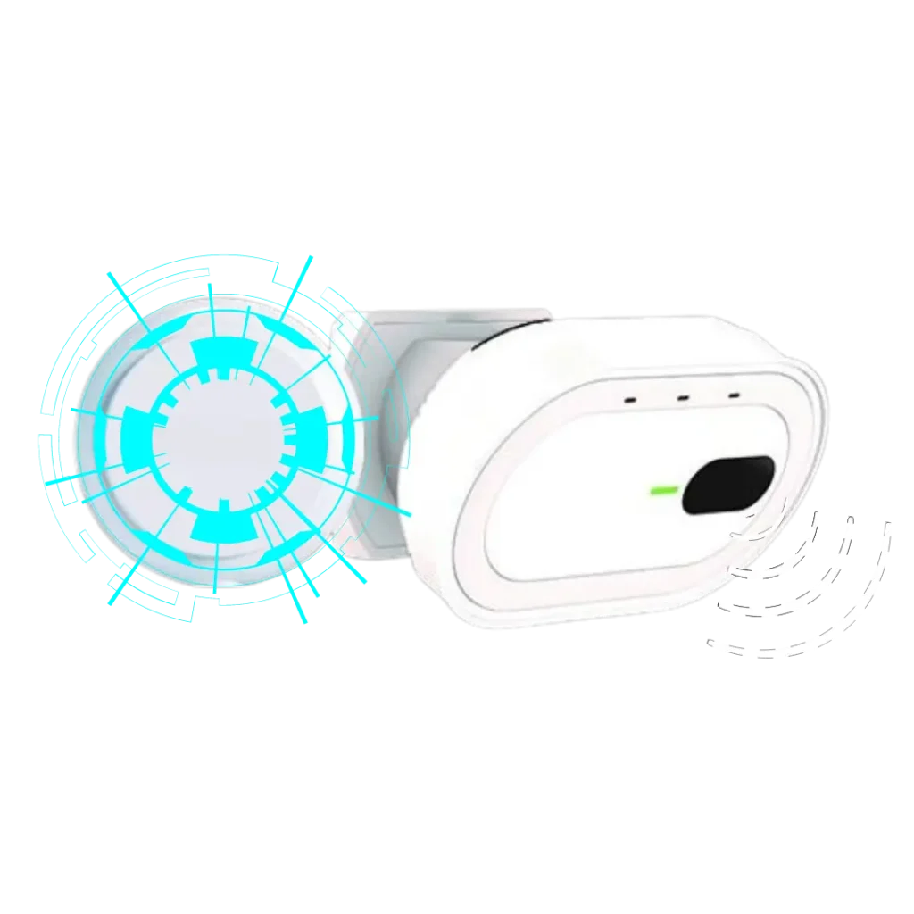

34,5%
Avrà almeno 65 anni nel 2050
Dal 24,7% del 2025, nello scenario mediano delle previsioni Istat: una popolazione più anziana, con nuovi bisogni di assistenza.
Medicleo veglia giorno e notte su anziani e persone fragili con un sensore radar non invasivo: allerte immediate a familiari e operatori, senza telecamere e senza nulla da indossare. Un'alternativa concreta all'ingresso in struttura, quando non è necessario.
Un ausilio alla cura, non un sostituto dell'assistenza sanitaria continuativa. Restare a casa è una scelta da valutare con la famiglia e i medici.

Nessuna telecamera Giorno e notte Nulla da indossareDove possibile, restare nel proprio ambiente significa preservare ciò che rende ogni giornata familiare. La sicurezza sostiene l'autonomia, non la cancella.
Continuare a scegliere i propri ritmi, con un supporto discreto che non prende il posto della persona.
Restare tra i propri ricordi, vicino ai familiari e alla comunità che si conosce.
Ricevere allerte anche a distanza e organizzare una risposta con chi si prende cura della persona.
Nessuna telecamera, nessun audio registrato: la casa resta uno spazio privato.
Sempre più persone anziane e famiglie più piccole: portare la vigilanza a domicilio significa rispondere a un bisogno concreto, senza rinunciare alla propria vita.
34,5%
Dal 24,7% del 2025, nello scenario mediano delle previsioni Istat: una popolazione più anziana, con nuovi bisogni di assistenza.
oltre il7%
Dal 4,1% del 2025. Cresce il bisogno di vicinanza e supporto, anche nelle ore in cui i familiari non possono esserci.
425.780
7,2 ogni 1.000 residenti, non tutti destinati agli anziani. Gli ospiti over 65 sono poco più di 291mila, quasi 239mila non autosufficienti.
Fonte: Istat, strutture residenziali al 1° gennaio 2024 · report
1.015
Altri 6.635 in attesa nelle Residenze Protette, compresi 1.668 con demenza. Un esempio regionale, non nazionale.
Fonte: Consiglio regionale Marche, interrogazione n. 84, 15 gennaio 2026
meno di2 su 100
Circa 14,8 milioni di over 65 e poco più di 291mila ospiti: la grande maggioranza vive fuori. È anche a casa che va portata la sicurezza.
Elaborazione su dati Istat riferiti a date diverse, un ordine di grandezza. Fonte: Istat, Indicatori demografici 2025
Le strutture sono indispensabili per chi ha bisogno di assistenza sanitaria continuativa. Ma i posti e l'accesso ai servizi non sono uniformi sul territorio; le attese e il costo delle rette pesano sulle famiglie. Per chi può vivere a domicilio, una vigilanza continua può affiancare l'assistenza e aiutare a restare a casa più a lungo.
Retta media RSA in Lombardia, 2025
Dato regionale, non nazionale; importi arrotondati nella fonte, servizi inclusi variabili. Fonte: CISL Milano, rassegna Conquiste del Lavoro · dati Lombardia 2025
Quando le condizioni permettono di restare a domicilio, Medicleo affianca familiari e operatori con monitoraggio continuo e allerte. La cura resta alle persone; il radar aiuta a sapere quando intervenire.
Frequenza cardiaca e respiratoria, sonno e presenza a letto, senza contatto.
Notifiche in caso di caduta e abbandono del letto, giorno e notte.
Informazioni consultabili dai familiari e dagli operatori autorizzati.
Niente immagini o audio registrati e nulla da indossare.
La Legge 33/2023 e il D.Lgs. 29/2024 promuovono il sostegno alla domiciliarità e alla qualità della vita delle persone anziane. È un quadro di indirizzo, non un riconoscimento specifico di Medicleo né una promessa di contributi.
Fonti: Gazzetta Ufficiale, Legge 33/2023 · Gazzetta Ufficiale, D.Lgs. 29/2024
Si definiscono l'ambiente, le persone autorizzate e chi risponde alle allerte. Poi il sensore affianca la vigilanza quotidiana.
Il sensore radar si installa nella stanza, senza alcun contatto con la persona e senza dispositivi sul letto.
Rileva in modo continuo frequenza cardiaca, frequenza respiratoria, qualità del sonno e movimenti.
In caso di caduta o abbandono del letto invia un'allerta agli operatori incaricati o ai familiari, che possono consultare i dati in tempo reale.
Famiglie, enti e servizi possono collaborare per sostenere chi può restare a casa e affiancare chi opera nelle strutture.
Quando la permanenza a casa è appropriata, il confronto dei costi può aiutare famiglie ed enti a valutare una soluzione sostenibile. Non tutte le situazioni producono un risparmio.
Retta, servizi inclusi ed eventuali extra. Una risposta necessaria per chi ha bisogni non gestibili a domicilio.
Assistenza proporzionata ai bisogni, monitoraggio e allerta, abitazione e spese quotidiane. Serve sempre qualcuno in grado di rispondere alle allerte.
Il sensore, il monitoraggio e le allerte: una presenza discreta al fianco di chi si prende cura.
Può essere un'alternativa concreta quando l'ingresso in struttura non è necessario. Le strutture restano indispensabili per chi ha bisogno di assistenza sanitaria continuativa: restare a casa è una scelta da valutare con la famiglia e i medici.
No. Il sensore radar si installa nella stanza, senza alcun contatto con la persona e senza dispositivi sul letto.
Nessuna telecamera e nessun audio registrato: niente immagini, la casa resta uno spazio privato.
In caso di caduta o abbandono del letto il sensore invia un'allerta agli operatori incaricati o ai familiari, che possono consultare i dati in tempo reale. Serve sempre qualcuno in grado di rispondere alle allerte.
Frequenza cardiaca e respiratoria, sonno e presenza a letto, consultabili in tempo reale dalle persone autorizzate.
No. È un ausilio alla cura, non un sostituto dell'assistenza: la cura resta alle persone, il radar aiuta a sapere quando intervenire.
Dipende dalla situazione e dalla regione, e non tutte le situazioni producono un risparmio. Il calcolatore qui sopra offre un confronto indicativo; il prezzo di Medicleo si ottiene richiedendo una proposta.
Sì: può supportare i progetti di assistenza domiciliare integrata e il monitoraggio di anziani soli sul territorio.
Una scelta importante merita risposte concrete. Guarda come funziona Medicleo e confronta le tue esigenze con ciò che il monitoraggio può offrire, senza confonderlo con l'assistenza alla persona.
Richiedi una demo per capire come funziona il sensore, quali dati sono consultabili e come arrivano le allerte. Partiamo dalla persona e dall'ambiente in cui vive, non da una soluzione uguale per tutti.